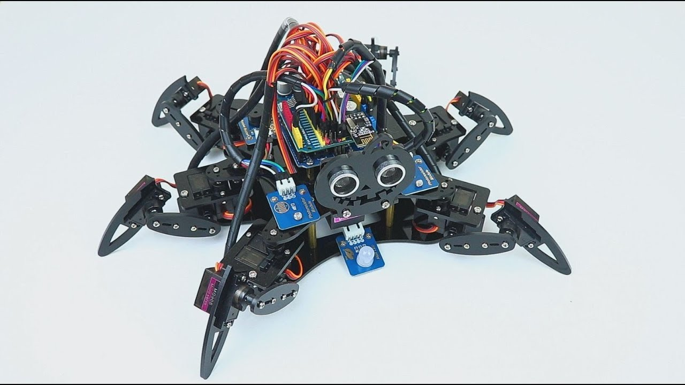

It was in the year 2005 that the first ever Arduino board was born in the classrooms of the Interactive Design Institute (IDI, cool university if you check out what work happens there) in Ivrea, Italy. Well, if you are not very familiar with the term, an Arduino is an Open Source development board that has opened the doors of electronics to a number of designers and creative engineers (someone like me and probably you!)
An Arduino is a low cost microcontroller board that allows even a novice to do great things in electronics. An Arduino can be connected to all kinds of light, motors, sensors and other devices. Using the Arduino, you can build an interactive display or a mobile robot or anything that you can imagine. Something like this,
You can purchase an official Arduino board for just about US $23 or buy it far cheaper from some other stores. Consequently, Arduino has become the most powerful open source hardware movement of our time.
Blah! Blah! Blah! OK but is the little board useful anywhere beside robotics stuff? 🤔
Today, there are Arduino-based LED cubes, Twitter displays, DNA analysis kits, breathalyser and what not. There are Arduino parties and Arduino clubs. As a feather to its crown, Google has recently released an Arduino-based development kit for its Android Smartphone!
You get the crazy fan following and what Arduino has enabled us to do, right? If not some hands-on experience will develop your interest.
Awesome ! Before we get into writing our first Arduino code. Let’s have a view on how it all started !
Most of the initial development of Arduino took place in the beautiful town of Ivrea, situated in Northern Italy. It is quite famous for its underdog kings. In the year 1002 AD, King Arduin (yeah, that’s the name!) ruled the country. Two years later, he was dethroned by King Henry II of Germany (sadly, but). In memoir of this King Arduin, there is this ‘Bar Di Re Arduino’, a pub on the cobble stoned street in the town. Well, this place is where a new era in electronics had its roots! :)
This bar was frequently visited by Massimo Banzi, one of the founders of Arduino (there were 5, he was the lead I would say). He was the one who gave the name Arduino to this low-cost microcontroller board in honor of the place! (Weirdo)
The Arduino IDE is a cross-platform application (for Windows, macOS, and Linux) that is written in Java. It includes a code editor and provides simple one-click mechanisms to compile and upload programs to an Arduino board. It also contains a message area, a text console, a toolbar with buttons for common functions and a hierarchy of operation menus.
The Arduino IDE supports the languages C and C++ using special rules of code structuring. The Arduino IDE employs the program avrdude(a command line program, nothing interesting) to convert the executable code into a text file in hexadecimal encoding that is loaded into the Arduino board by a loader program in the board's firmware.
You can download the IDE or try out the online web editor here.
A sketch is what a program written with the Arduino IDE is called. Sketches are saved on the development computer as text files with the file extension .ino..
A minimal Arduino C / C++ program consists of only two functions:
setup(): This function is called only once when a sketch starts after power-up or reset. It is used to initialize variables, input and output pin modes, and other libraries needed in the sketch. It is analogous to the function main().
loop(): After setup() function is executed, the loop() function is executed repeatedly in the main program. It controls the board until the board is powered off or is reset. It is analogous to the function while(1).
So finally, let's begin with a Hello World program (kidding but something similar in Arduino)
The above is an UNO board (there are many Arduino boards for different requirements in a project). The LED right below the 13th pin can be controlled by it.
A typical program used by beginners, akin to Hello, World!, is Blink, which repeatedly blinks the on-board LED (below 13th pin) integrated into the Arduino board. This program uses the functions pinMode(), digitalWrite(), and delay(), which are provided by the internal libraries included in the IDE environment. This program is usually loaded into a new Arduino board by default by the manufacturer.
The open-source nature of the Arduino project has facilitated the publication of many free software libraries that other developers use to augment their projects. Even you can create your own library and if it's useful contribute back to the project :)
Please check out the tutorials for setting up the arduino board in case you have any difficulties. https://www.arduino.cc/en/Guide/ArduinoUno
Thanks for reading and making it this far!